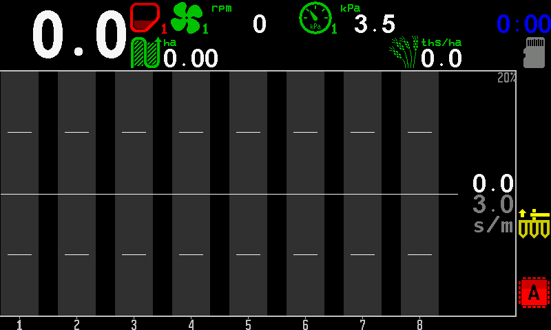

L'écran d'accueil sur différentes machines
Le même panneau sur un semoir monograine, un semoir à céréales et des machines de 44 et 96 rangs — à l'arrêt et au travail — pour reconnaître votre propre écran.
Ce que montre l'écran d'accueil dépend du profil. Les images ci-dessous ont été prises sur un seul panneau, micrologiciel 1.2.3, configuré comme différentes machines. Les particularités du banc — l'horloge bleue, la vitesse jaune — sont expliquées dans À propos des images.
Un semoir monograine de huit rangs, à l'arrêt

- Vitesse d'avancement. Jaune : la vitesse est simulée, non mesurée.
- Trémies. La première verte, la deuxième rouge — cette trémie signale qu'elle est vide.
- Doseurs. Deux capteurs d'arbre de doseur.
- Turbine. Avec sa vitesse en tr/min à côté.
- Surface. Hectares traités sur le champ actif.
- Densité de semis. La dose réelle de semis en milliers par hectare.
- Carte mémoire. Une carte microSD est dans le logement.
- Tolérance. L'écart admis en vigueur, écrit au-dessus du diagramme.
- Repères de tolérance. Limites haute et basse, dans chaque colonne.
- Ligne de dose. La dose de consigne.
- Colonne de section. Vide : la machine est à l'arrêt.
- Champ de dose. Graines mesurées par mètre en haut, consigne en dessous.
- Verrouillage manuel. La main jaune : l'application du produit est verrouillée à la main. Verrouiller l'application à la main
- Défaut d'actionneur. Un défaut des moteurs électriques de doseur. Écran Motors
- Numéros de section.
Trois machines, à l'arrêt
Les consignes sont réglées, les doses réelles sont à zéro. Quarante-quatre capteurs de graines sur deux rangées de vingt-deux, deux trémies, deux arbres doseurs, une turbine, un champ de dose en graines par seconde ; l'icône du semoir à droite est verte — la machine est en position de travail.

Vingt-quatre capteurs de graines et douze capteurs d'engrais : deux diagrammes, deux champs de dose. En haut, deux trémies, deux arbres doseurs, la pression d'huile, la batterie, l'allumage et une turbine.

Huit capteurs de graines en mode « Precise » avec un capteur de pression : une rangée de colonnes avec la bande de tolérance, la dose en graines par mètre et le comptage par hectare.

Au travail
Le semoir monograine de huit rangs en train de semer. Chaque colonne est un rang ; les sommets bougent à chaque comptage, les hachures montrent les manques et les doubles. À lire avec Le diagramme des sections.

Le semoir à 24 rangs à 12 km/h. La série commence avec les colonnes sous la ligne et « NOT UNDER CONTROL » (hors surveillance) au-dessus des deux diagrammes ; puis la consigne est abaissée, les colonnes remontent au-dessus de la ligne et les rangs sont de nouveau sous surveillance.

La machine de 44 rangs à 12 km/h : deux diagrammes de vingt-deux colonnes, trémies pleines, arbres doseurs en rotation.

La plus grande machine : 48 rangs de semences et 48 rangs d'engrais, trois trémies, trois arbres doseurs, deux turbines. Elle aussi démarre sous la ligne et revient sous surveillance quand la consigne descend à la dose réelle.

Une machine réelle au travail
Pris sur une machine avec 48 capteurs de graines sur deux rangées, deux trémies, deux capteurs d'arbre de doseur et une turbine, pendant le semis. Le champ de dose est sélectionné pour modification : son fond est éclairé, la consigne est en blanc et la valeur mesurée en gris. Non sélectionné, c'est l'inverse.

Votre machine fait quelque chose que cette page n'explique pas ? Écrivez à support@agriwelt.com — un ingénieur vous répond.